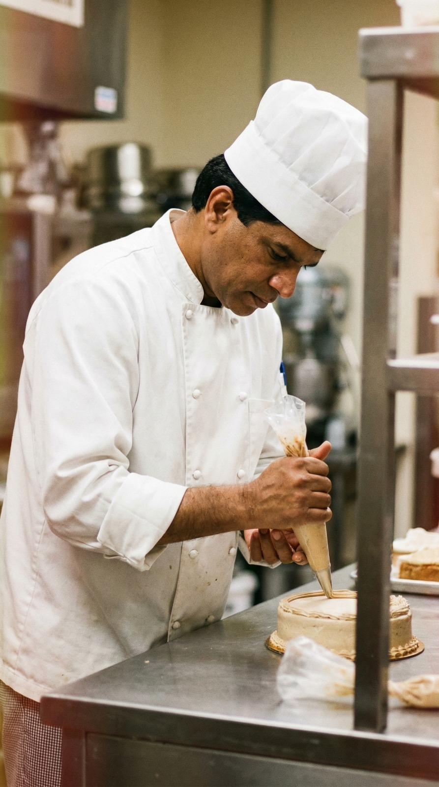
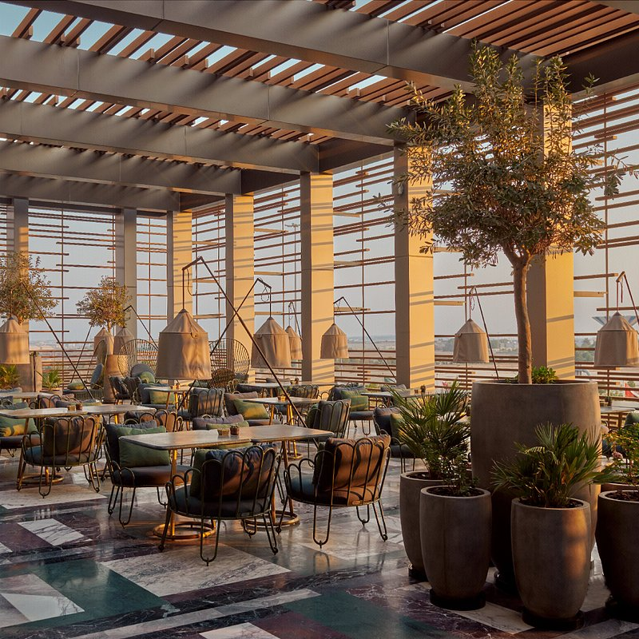

Kiran A. Naik
Pâtissier & Culinary Development Specialist
28 Years of Experience · Kuwait
Pâtissier & Culinary Development Specialist
28 Years of Experience · Kuwait

With nearly three decades in the culinary world, I have built my career across fine dining, large-scale F&B operations, and pastry research & development.
From my early years as Sous Chef at Raysone Restaurant to leading pastry production at M.H. Alshaya and pioneering recipe innovation at MMC Catering, my journey reflects a deep commitment to quality, creativity, and continuous evolution.
I bring together technical precision, team leadership, and a passion for developing menus that delight diverse palates across cultures and occasions.

Sous Chef
Pastry Chef
Research & Development — Pastry